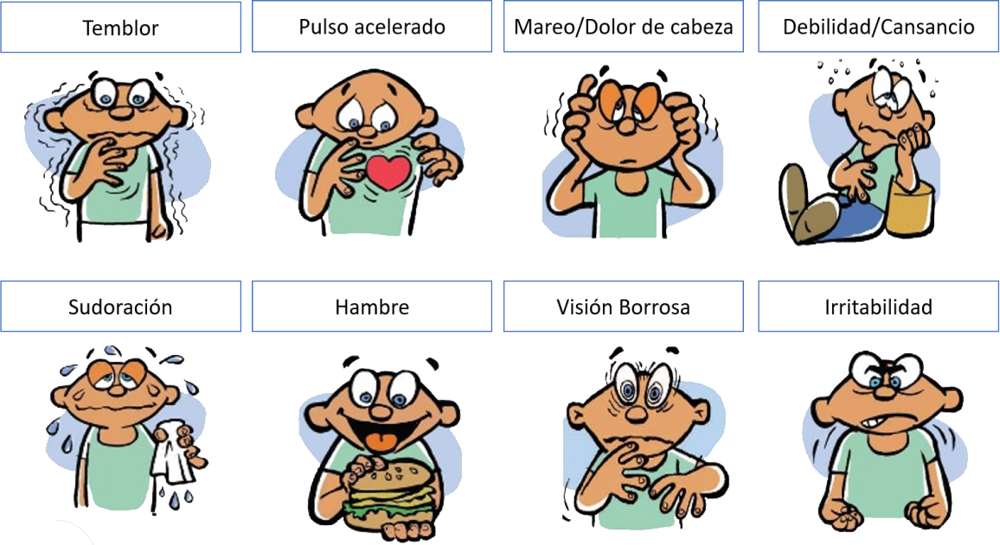
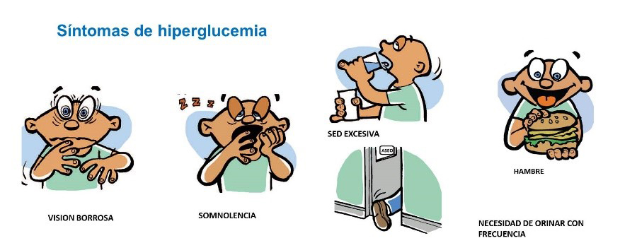
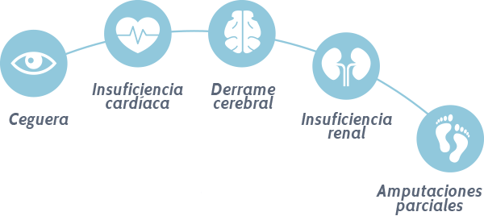

¿Que es la diabetes?
La diabetes mellitus tipo 1 es una enfermedad autoinmune y metabolica que se caracteriza por la destruccion de
las celulas beta del pancreas que son las encargadas
de producir la insulina, la hormona encargada de llevar la glucosa a las celulas, al no existir la insulina en
nuestro cuerpo la glucosa se mantiene en el torrente sanguineo
y provoca diversos problemas. Entre estos problemas existen dos que son principales, que son las hipoglucemias y
la hiperglucemia.

La hipoglucemia se refiere a un nivel por debajo de lo normal de azucar en sangre (El nivel normal es entre 80
y 120 mg/dl) es mas peligrosa que la hiperglucemia ya que sus
efectos son mas inmediatos, tiene diversos sintomas que pueden variar de persona a persona pero los principales
son:

- Palidez
- Temblores
- Sudoracion
- Fatiga
- Mareos
- Entumecimiento en labios, boca y mejilla
- Irritabilidad o ansiedad
Si no se trata la hipoglucemia puede llegar a ser mortal y la forma de tratarlo es simplemente ingresar glucosa
al cuerpo, es decir, comer o tomar algo que contenga azucar.
Las causas de una hipoglucemia son principalmente comer menos de lo habitual o pasar mucho tiempo sin comer,
ejercicio excesivo, ingerir mucho alcohol y aplicarse una dosis
excesiva de insulina.
La hiperglucemia es la cantidad excesiva de azucar en sangre, y a diferencia de la hipoglucemia sus problemas
no son inmediatos pero igualmente necesita ser tratada y manejada
lo mas rapido posible, ya que los problemas que trae pueden ser muy graves y provocar una calidad de vida mucho
peor. Los sintomas son los siguientes:

- Necesidad de orinar frecuente
- Sed excesiva
- Vision borrosa
- Fatiga
- Sequedad en la boca
Estos sintomas son los que suele tener una persona que tiene diabetes que no se la han diagnosticado todavia, ya
que normalmente no controla su dieta y tiene un nivel alto
en la sangre, por eso es importante prestarle atencion a estos sintomas ya que mientras mas rapido se detecte la
diabetes mejor. A largo plazo la hiperglucemia provoca un deterioro
del cuerpo, esto incluye:

- Enfermedades cardiovasculares
- Neuropatias
- Daños renales
- Ceguera
- Problemas en los pies, que en casos graves pueden llevar a la amputacion
- Problemas en los huesos y articulaciones
- Infecciones en dientes y encias
La forma de tratar la hiperglucemia es mantener una dieta balanceada, respetar el plan y las recomendaciones del
medico y aplicar correctamente la insulina
de ser necesario
Ahora bien, ¿Que causa la diabetes tipo 1? La causa es una combinacion de predisposicion genetica y factores
ambientales y si bien la diabetes no se puede prevenir (o curar)
si se puede detectar, por la presencia de ciertos anticuerpos, que son los que cuando se presente la enfermedad
destrueyen las celulas que prducen la insulina
(por eso es una enfermedad autoinmune). Es una enfermedad que se da principalmente en personas jovenes y
adolescentes, pero tambien se puede dar en adultos y se da en 1 de cada 20 personas,
siendo menos comun que la diabetes tipo 2.
Disclaimer
Esta no es una pagina medica ni esta abalada por ningun profesional, es solo informativa, si usted tiene
diabetes y tiene que consultar algo hagalo con un medico